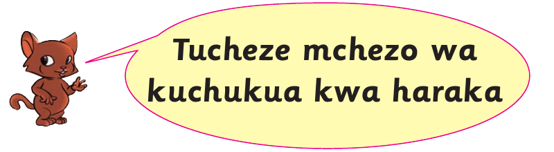
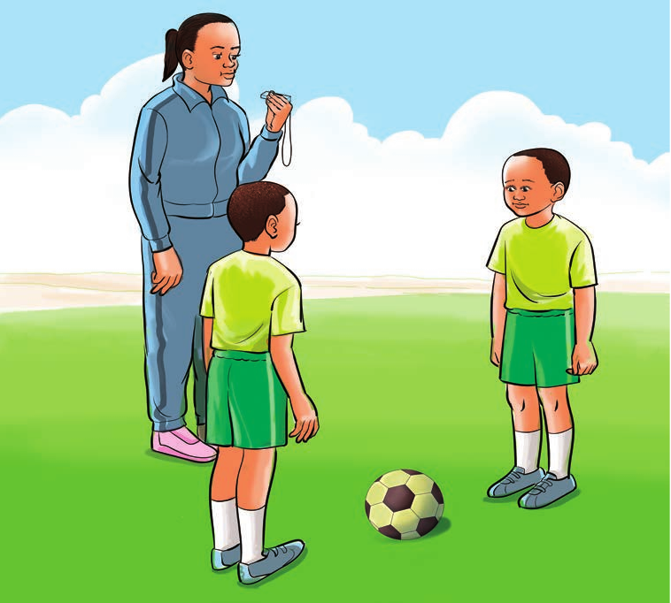

Tucheze mchezo wa kuchukua kwa haraka

Mchezo huu unachezwa na watu wawili wawili.
Hatua za kucheza
1. Simama wima ukitazamana na mwenzio.
2. Mpira uwe katikati yenu.
3. Sikiliza amri za matendo ya kufanya kutoka kwa mwamuzi.

4. Fanya matendo anayotamka mwamuzi.
5. Chukua mpira haraka mwamuzi akisema “mpira”.
6. Mchezaji wa kwanza kuchukua mpira anapata alama moja.
7. Mchezaji wa kwanza kufikisha alama 5 ndiye mshindi.
Zoezi la 6
Shughuli ya kufanya 11
Cheza mchezo wa kuchukua kwa haraka.